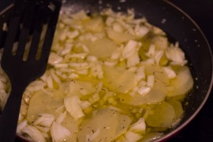
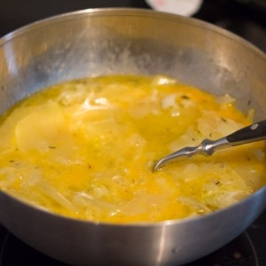
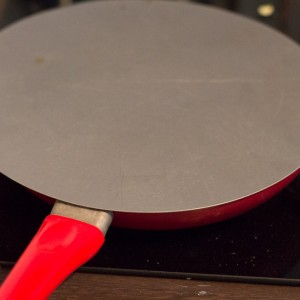

Tortilla espagnole au chorizo

Il y a un peu moins d’un an j’allais publier cette recette de tortilla espagnole et pourtant elle n’est jamais parue, les photos ne me convenant pas du tout.
Aujourd’hui, les beaux jours étant de retour la folie des tortillas espagnoles a repris ses droits à la maison alors me voilà avec de nouvelles photos et la recette, toujours la même à partager enfin avec vous 🙂 C’est marrant car si l’on regarde les ingrédients d’une omelette française et ceux d’une tortilla espagnole ce sont les mêmes avec comme ingrédient principal : l’œuf! Pourtant, je n’aime pas du tout mais alors pas du tout les omelettes mais je raffole des tortillas (allez savoir pourquoi…). La tortilla espagnole est beaucoup plus épaisse et beaucoup plus fondante. Elle peut se servir en plat principal accompagnée d’une salade ou encore en tapas au moment de l’apéro. Traditionnellement en Espagne, on la sert le dimanche midi et la recette est transmise de mère en fille pour perpétuer cette tradition. Souvent composée de pommes de terre (que l’on appelle tortilla de patatas), la tortilla espagnole peut aussi être préparée nature, avec des oignons ou comme ici avec du chorizo.
Dans celle-ci, en plus du chorizo, j’y ai mis des pommes de terre, de l’ail et des oignons. Il est très important que la tortilla soit toujours un peu « baveuse » en fin de préparation alors ne soyez pas étonnés! Trop de personnes s’imaginent qu’il faut qu’elle soit dure et sèche comme celles que l’on trouve dans le commerce mais c’est une erreur!!
Je vous laisse avec la recette et j’espère qu’elle vous plaira…
Ingrédients
- Pommes de terre - 3
- Oignon - 1
- Ail - 2 gousses
- Chorizo - 80g
- Oeufs - 5
Instructions
- Couper les pommes de terre en fines rondelles. Réserver
- Dans une poêle ou une grande casserole, verser un peu d'huile d'olive et ajouter l'ail coupé en petits morceaux
- Ajouter les pommes de terre et recouvrir d'huile d'olive
- Cuire à feu doux pendant 5 minutes
- Émincer l'oignon
- Ajouter l'oignon émincé dans la poêle et cuire jusqu'à ce que les pommes de terre soient tendres
- Pendant ce temps, cassez les œufs dans un grand bol et battez-les à l'aide d'une fourchette
- Quand les pommes de terre sont cuites, sortez-les à l'aide d'un écumoire
- Versez-les dans le bol contenant les œufs
- Saler, poivrer
- Couper le chorizo en petits morceaux
- Ajouter les morceaux de chorizo aux œufs et mélanger
- Dans une poêle, verser un peu d'huile d'olive et verser le mélange œufs - pommes de terre - chorizo
- Mélanger délicatement et cuire sur feu moyen en surveillant les bords de la poêle
- Quand les bords commencent à dorer et à paraitre "cuits", placer une assiette ou un plat sur le dessus
- Retourner d'un coup sec votre tortilla et transvasez-la de nouveau dans la poêle
- Pendant que l'autre côté cuit, rabattez les rebords à l'aide d'une spatule (pour former l'aspect arrondi de la tortilla)
- Laisser cuire encore quelques minutes (l’extérieur doit être bien ferme)
- Dégustez chaud ou froid, en plat ou en apéro c'est comme vous le souhaitez!



Les tips de la communauté
Recette très appréciée par les amateurs de tortilla, régulièrement plébiscitée pour l'apéro. La plupart des commentaires soulignent le caractère alléchant des photos et l'envie immédiate de tester. Une correction importante a été nécessaire sur la quantité d'œufs initialement manquante.
Astuces
- Servir tiède pour l'apéro avec un verre de vin rouge (tinto)
- Le chorizo Saint Agaûne recommandé est moins gras que les autres saucissons
- Possible de remplacer le chorizo par du bacon en lanières selon les retours
Variantes suggérées
- Remplacer le chorizo par du bacon en lanières (approuvé par les testeurs)
- Utiliser un autre type de saucisson selon ses préférences
Ajustements signalés
- La quantité d'œufs devait être de 5 (information manquante à plusieurs reprises demandée)